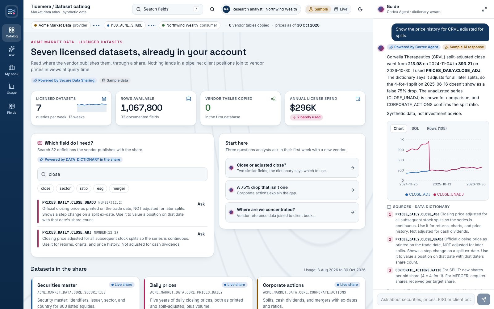
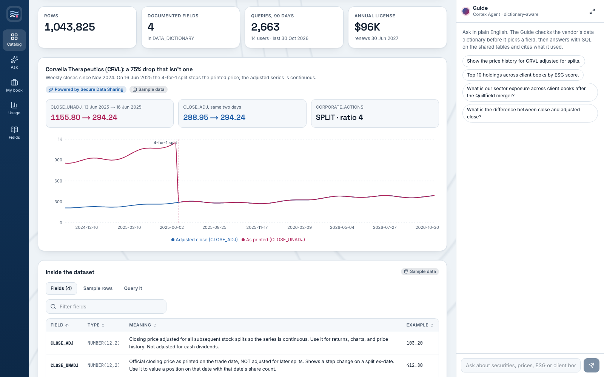
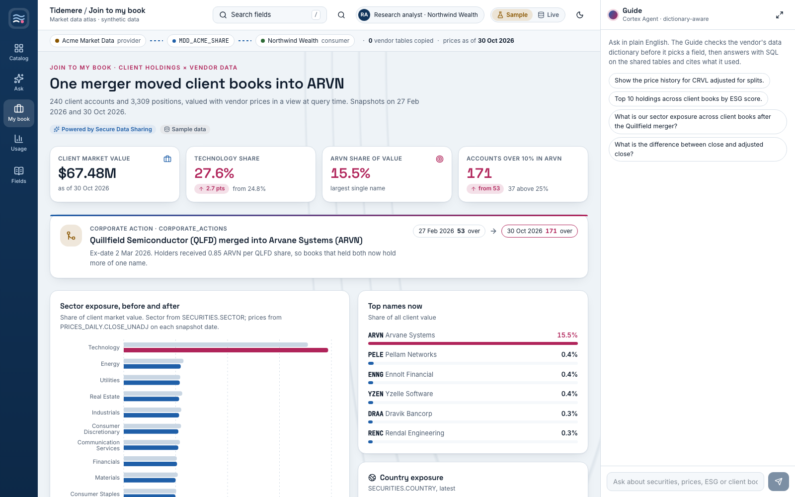
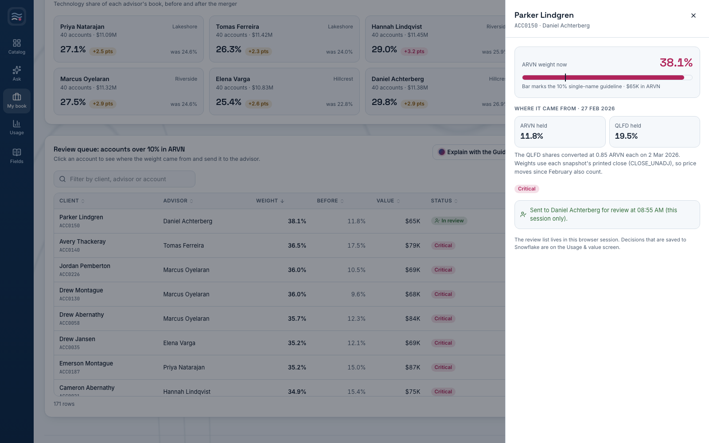
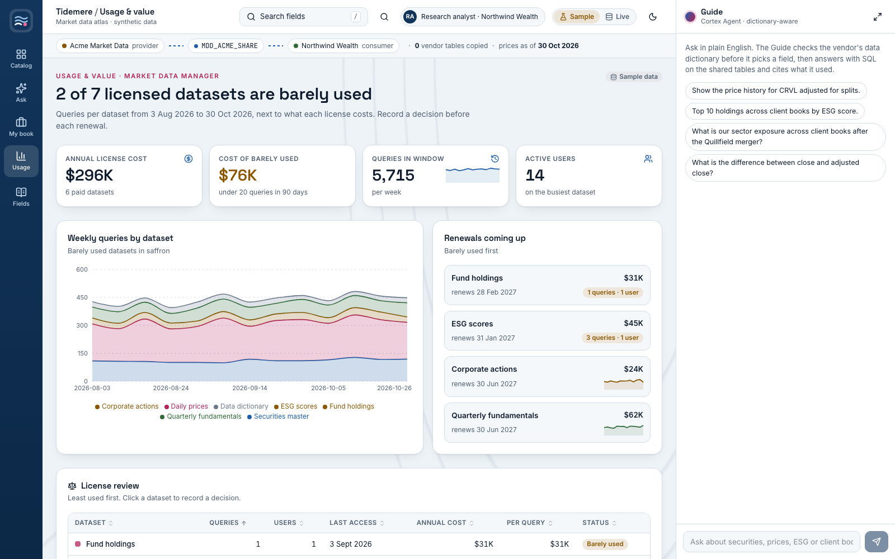
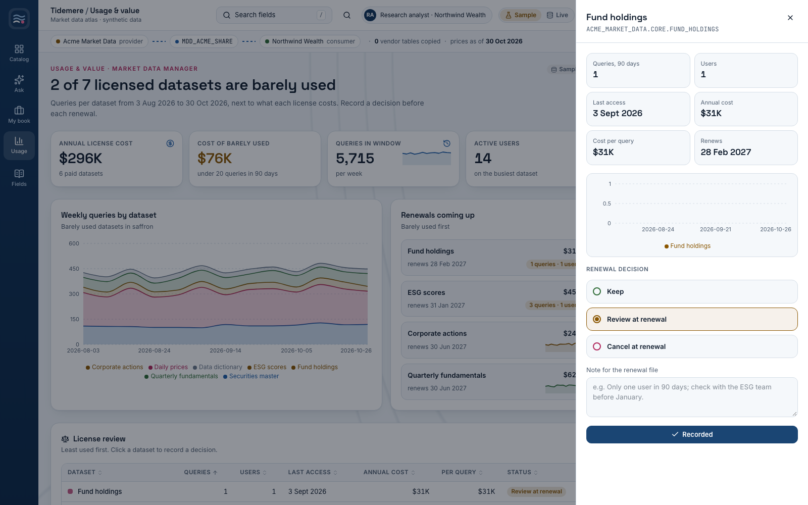
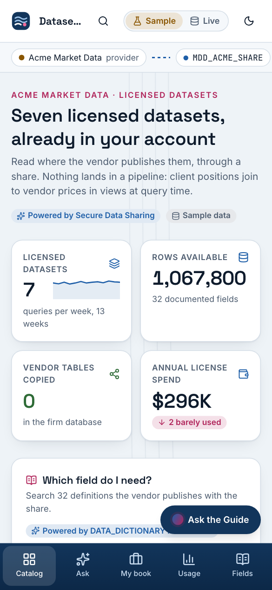
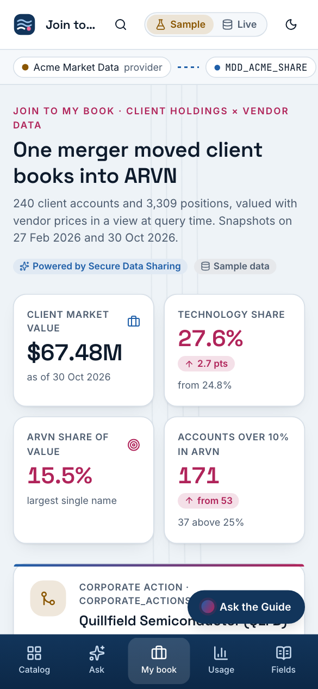
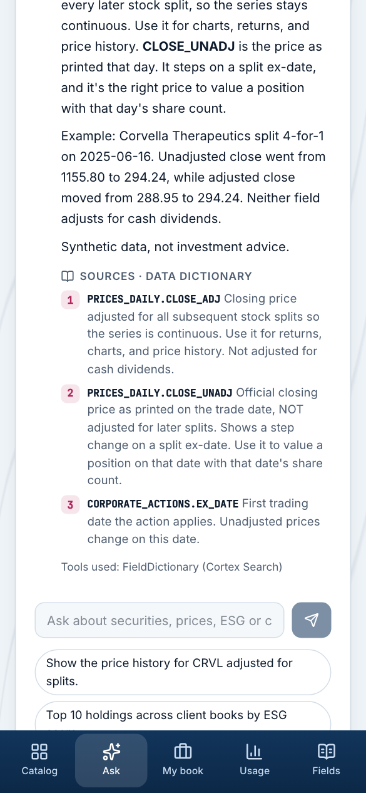

Find it, ask it, join it, justify it
Screens from the app running on its bundled synthetic data. Results like the ones below hold on this synthetic data set only.
A catalog of what you license
Every dataset in the share, with row counts, freshness and a 13-week usage sparkline. Search the vendor's 32 field definitions from anywhere with /.

The agent reads the dictionary first
Ask for a price history and the Guide searches the dictionary, picks the split-adjusted close, writes the SQL, draws the chart and cites the fields it used.
Cortex AgentCortex SearchCortex Analyst
A 75% drop that isn't one
Corvella Therapeutics split 4-for-1. The printed close falls from 1,155.80 to 294.24 overnight; the adjusted close barely moves. The corporate actions table explains the gap.
Secure Data Sharing (provider side)
PRICES_DAILY and CORPORATE_ACTIONS tables.Vendor data meets client books
Client holdings join to vendor prices and reference data in a view, at query time. After a merger, Technology rises from 24.8% to 27.6% of client value and 171 accounts sit above a 10% single-name guideline, up from 53.
Secure Data Sharing (provider side)Views on shared tables

Usage next to cost, before renewal
Queries, users and last access per dataset against its license cost. ESG scores and fund holdings had 3 and 1 queries in 90 days. Record a decision; in Live mode it is written to a Snowflake table.
ACCOUNT_USAGE.ACCESS_HISTORY

Same atlas, pocket size
The rail becomes a tab bar, the Guide opens from a button, and tables scroll inside their cards.


